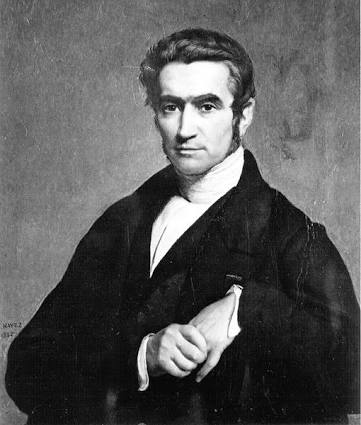

1796 — 1874 • Бельгийский математик, астроном, статистик и социолог

Адольф Кетле (в русской традиции фамилию часто ошибочно пишут как Кетли или Кетлер) — один из основателей современной научной статистики.
Он первым начал применять математические методы и теорию вероятностей для изучения общества, поведения людей и антропометрии, заложив основы современной демографии и социологии.
Кетле ввёл концепцию l'homme moyen — статистического портрета человека со средними физическими и социальными характеристиками для изучения закономерностей общества.
Доказал, что такие явления, как рождаемость, смертность и даже уровень преступности, подчиняются строгим статистическим закономерностям.
Предложил формулу вес / рост² для оценки физического развития больших групп населения, которая в XX веке стала мировым медицинским стандартом.
Проверьте знаменитую формулу учёного на практике: